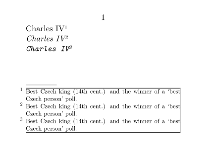

Syntax (autogenerated)
| \setupfootnotes[...=...,...] | |
| ...=...,... | inherits from \setupnote |
Syntax
| \setupfootnotes[...,...=...,...] | |
| conversion or numberconversion | numbers characters Characters romannumerals Romannumerals |
| way | bytext bysection |
| location | page text columns firstcolumn lastcolumn high none |
| rule | on off |
| rulecolor | name |
| before | command |
| after | command |
| width | dimension |
| height | dimension |
| bodyfont | 5pt ... 12pt small big |
| style | normal bold slanted boldslanted type cap small... command |
| distance | dimension |
| columndistance | dimension |
| margindistance | dimension |
| n | number |
| numbercommand | oneargument |
| textcommand | oneargument |
| split | tolerant strict verystrict number |
| textstyle | normal bold slanted boldslanted type cap small... command |
| textcolor | name |
| interaction | yes no |
| factor | number |
| [...,...=...,...] | see \framed |
Description
Setup the properties of the footnote blocks (which may contain multiple footnotes), and some properties of the note marks in that block.
Keys
| Key | Values |
|---|---|
| conversion | numbers characters Characters romannumerals Romannumerals |
| way | bytext bysection
Start numbering from 1 again at the start of every section? |
| location | page text columns firstcolumn lastcolumn high none
Where to place the footnotes? |
| rule | on off |
| rulecolor | name |
| before | command |
| after | command |
| width | dimension |
| height | dimension |
| bodyfont | 5pt ... 12pt small big
What size to print the footnotes? |
| style | normal bold slanted boldslanted type cap small... command |
| distance | dimension |
| columndistance | dimension |
| margindistance | dimension |
| n | number |
| numbercommand | command that takes 1 argument |
| textcommand | command that takes 1 argument |
| split | tolerant strict verystrict number |
| textstyle | normal bold slanted boldslanted type cap small... command |
| textcolor | name |
| interaction | yes no
Should footnote marks be hyperlinks? |
| factor | number |
| [...,...=...,...] | see \framed |
Example
-
\setuppapersize[A8, landscape] \defineconversion[starred][\starredconv] \def\starredconv#1{\ifcase#1\or*\or**\or***\fi} \setupfootnotes [conversion=starred, color=blue, frame=on] \starttext Charles IV\footnote{Best Czech king (14th cent.) and the winner of a \quote{best Czech person} poll.} \it Charles IV\footnote{Best Czech king (14th cent.) and the winner of a \quote{best Czech person} poll.} \tt Charles IV\footnote{Best Czech king (14th cent.) and the winner of a \quote{best Czech person} poll.} \stoptext
- 
Extra Space
To add extra space before the footnote marks:
-
\setupfootnotes[ textstyle={\hskip.05em}, ] \starttext í\footnote{í} T\footnote{T} ľ\footnote{ľ} ě\footnote{ě} ď\footnote{ď} \stoptext
See also
- \footnote
- \setupfootnotedefinition to setup the individual footnotes
Help from ConTeXt-Mailinglist/Forum
All issues with: